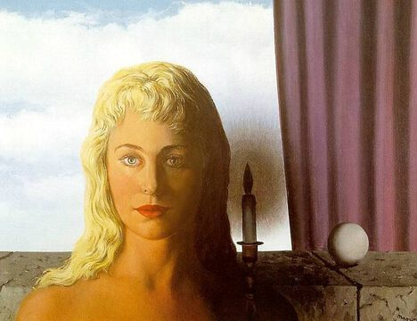

Rene Magritte,1898 - 1967,"Surrealism,Impressionism",Belgian,"René François Ghislain Magritte (French: [ʁəne fʁɑ̃swa ɡilɛ̃ maɡʁit]; 21 November 1898 – 15 August 1967) was a Belgian Surrealist artist. He became well known for creating a number of witty and thought-provoking images. Often depicting ordinary objects in an unusual context, his work is known for challenging observers' preconditioned perceptions of reality. His imagery has influenced Pop art, minimalist and conceptual art.",http://en.wikipedia.org/wiki/René_Magritte,194
